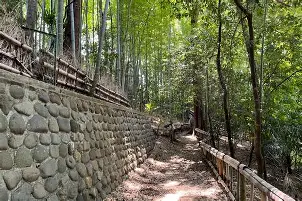
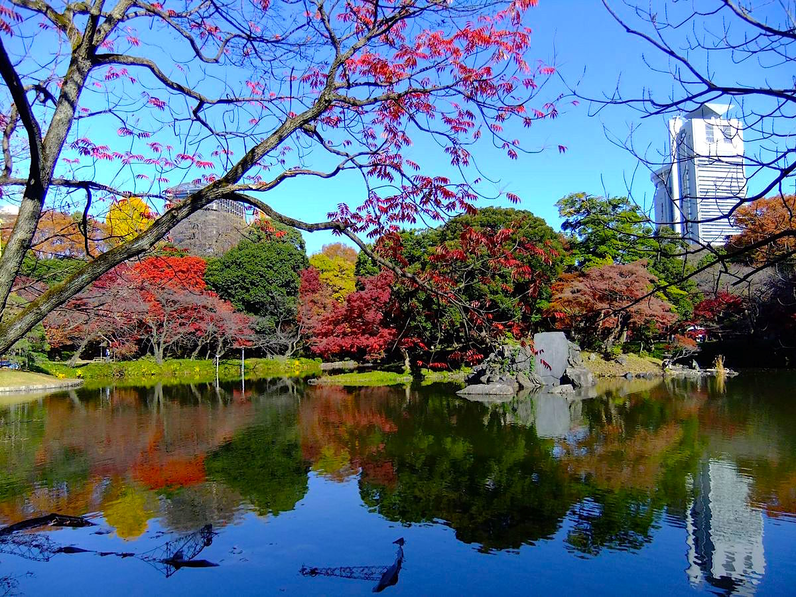

旧岩崎邸庭園
東京都 台東区
明治の実業家・岩崎弥太郎邸。ジョサイア・コンドル設計の洋館と日本庭園が共存する都内屈指の名所。
不忍池
東京都 台東区
上野恩賜公園に隣接する都会のオアシス。夏の蓮の花が一面に広がる景色はライダーの間でも人気。

竹林公園
東京都
石畳と竹林が続く静寂のスポット。喧騒を離れたい時に立ち寄りたい隠れた穴場。
清澄庭園
東京都 江東区
回遊式林泉庭園の名園。大泉水を中心に全国の銘石が配された明治の名庭。都内随一の静けさ。
等々力渓谷
東京都 世田谷区
都内唯一の渓谷。緑深い谷底を流れる矢沢川と赤い橋が織りなす景観は、ここが東京とは思えない別世界。

小石川後楽園
東京都 文京区
江戸初期に水戸徳川家が造営した大名庭園。秋の紅葉と池の水面に映る東京ドームの対比が圧巻。
area map
選択中のスポット

乗鞍スカイライン 全線制覇
長野県 松本市